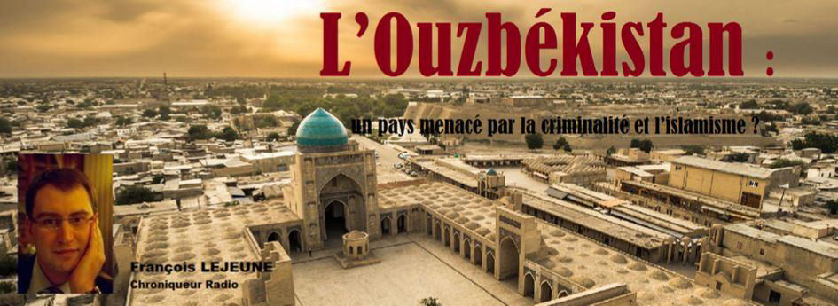
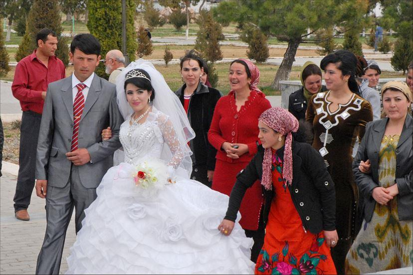
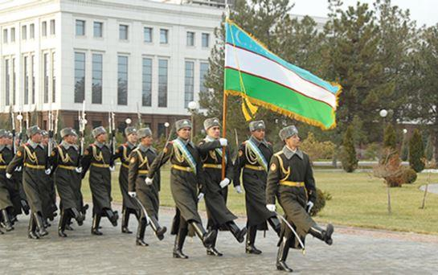
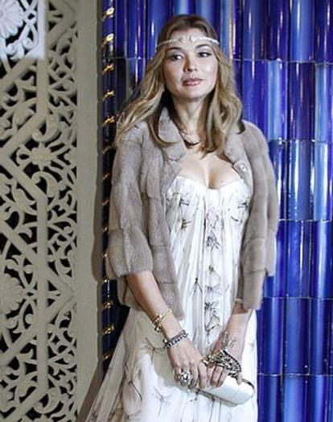
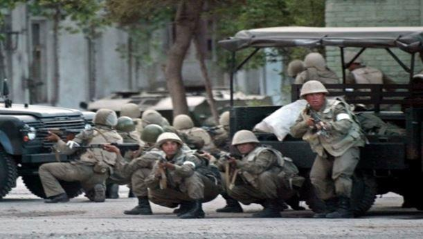
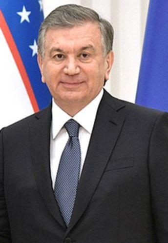
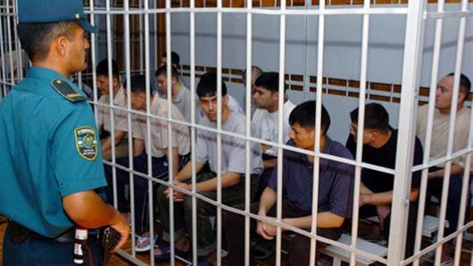
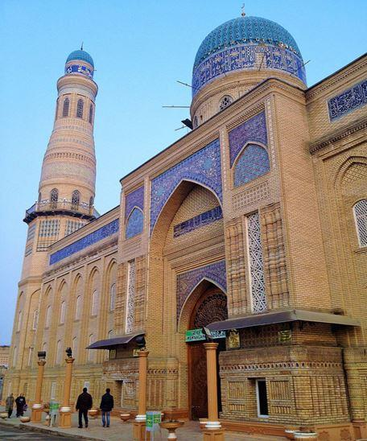

L’Ouzbékistan : un pays menacé par la criminalité et l’islamisme ?
par François LEJEUNE

L’Ouzbékistan est un pays qui est souvent implacable et imprononçable par le public. Il apparait de temps en temps dans les journaux ou dans les reportages depuis la fin de l’URSS.
En positif, il est associé à ses mosquées bleues et son paysage montagneux diversifié. Mais c’est très souvent en négatif que celui-ci revient. Ce pays est associé à un régime autoritaire, à la lutte brutale contre l’islamisme terroriste et aussi à la corruption et la criminalité qui gangrène ce pays.
Pourtant un vent de liberté souffle depuis la mort en 2016 de son 1er dirigeant. Cet autocrate local ex communiste dirigeait ce pays depuis l’indépendance d’une main de fer. Cet homme Islam Karimov, incarnait la stabilité et la neutralité de ce pays poids lourd de l’Asie centrale. Malgré sa population relativement nombreuse, la richesse sous exploitée des hydrocarbures et de son agriculture suffisait à peine à développer cette nation. Une large diaspora s’est constituée en dehors du pays alors que les Slaves ré immigraient en Russie.
Comme beaucoup de nouveau dirigeant, l’ancien premier ministre devenu président Shavhat Mirziyoyev se veut plus libéral et plus ouvert que son prédécesseur.
Une question se pose malgré les succès récents : ce libéralisme ne risque pas de laisser le champ libre à la criminalité organisée et à l’islamisme ?
D’autant qu’une forte diaspora s’est constituée en Russie mais aussi en Arabie Saoudite.
Cette chronique a pour but de poser les décors les enjeux et les acteurs sur un point sensible de l’échiquier géopolitique de l’Asie centrale et de l’ex URSS.
L’Ouzbékistan pourrait être considéré comme un poids lourd de l’ex URSS en Asie centrale. L’Ouzbékistan est le pays d’Asie centrale le plus peuplé (plus de 31 millions d’habitants). Les Ouzbeks ethniques, peuple de langue turque, constituent officiellement près de 80 % de la population. Le reste est constitué de Persophones tadjik et de Russes. L’Ouzbek est langue officielle mais le Russe reste très utilisé.
Plus de 90% des 33 millions d'Ouzbeks sont officiellement musulmans mais les pratiques restent relativement sécularisées en raison du passé soviétique. Dans son combat contre les islamistes radicaux, l’Ouzbékistan a mené une politique sans commune mesure. D’abord, l’État a garanti à ses citoyens qu’ils pouvaient pratiquer un islam officiel en contrôlant les mosquées par des imams formés par l’État. En conséquence, il y a eu une scission entre les musulmans pratiquant leur foi de façon personnelle et ceux pratiquant un islam politisé.
Toute publication religieuse importée dans le pays est d’abord examinée avec attention. Les publications en langue arabe sont traitées avec une suspicion particulière par les autorités.
Le port du voile islamique et le port d’une barbe longue font l’objet d’une interdiction non officielle en Ouzbékistan. Selon les autorités, les hommes barbus et les femmes portant le hijab sont des partisans potentiels de l’islam radical et représentent donc un danger pour la société.
Un mot sur l’économie, celle–ci est largement héritière du système soviétique. Le phénomène qui a largement façonné l'histoire de l'Ouzbékistan dans les années 1960-1980, c'est le développement intensif de la monoculture du cÀoton. Sous la pression de Moscou qui incitait à produire de plus en plus de coton, les dirigeants ouzbeks développèrent un système de falsification des statistiques. Le dirigeant ouzbek de l'époque, Sharof Rashidov et son entourage furent impliqués dans l'« affaire du coton imaginaire » qui leur procura des gains substantiels (on parlait à l'époque d'une « Mafia du coton » ou « Mafia ouzbèke »). Malgré l'ampleur de cette affaire, Sharof Rashidov est apprécié par l'actuel pouvoir ouzbek comme un dirigeant qui a beaucoup investi dans le développement de la république et qui a pu obtenir de Moscou une certaine autonomie.
Dès l'indépendance, le premier président Karimov a fait le choix d'une stratégie de réforme graduelle visant notamment à atteindre l'autosuffisance énergétique et alimentaire du pays. Cependant, la croissance économique reste soumise à des fluctuations régulières.
Tributaire des recettes d'exportation (coton, uranium et or pour une large part), le développement de l'économie ouzbèke a été freiné par les résultats en demi-teinte de la récolte du coton dont l'Ouzbékistan est le 4e producteur mondial, et de l'uranium dont le Combinat minier et métallurgique de Navoï est le 8e producteur mondial.
De plus, sans véritable stratégie de réformes, les autorités du pays ont multiplié les faux pas (comme dans le domaine des changes, ayant refusé la convertibilité de la monnaie nationale jusqu'en 2003) et des actions restrictives et dirigistes envers les petites et moyennes entreprises, ce qui entraîna une stagnation dans le milieu des affaires. Seulement le petit commerce de rue et les entreprises ayant le droit privilégié de faire les opérations d'importation ont pu prospérer tandis que le tissu économique général resta de facto soit étatique, soit sous une forte emprise de l'État. On notera également une forte emprise sur les nouveaux secteurs économiques à haute valeur ajoutée, surtout dans la capitale Tachkent, exercée jadis par la fille de l’ancien président Karimov, Gulnara.
Sous la présidence de Karimov, tous les partis d'opposition (dont les plus influents sont Erk (Volonté) et Birlik (Unité) sont interdits et le moindre courant dissident est réprimé. Il n'existe que des partis aux nuances peu compréhensibles aux observateurs occidentaux, mais qui soutiennent tous l'action du président. Les médias et tous les aspects de la vie sociale, politico-économique et même culturelle se trouvent sous une étroite tutelle et censure de l'appareil d'État. La fin de l’idéologie communiste a entrainé un vide politique. Cet espace a été rapidement comblé par un retour aux sources et aux racines de l’identité, qui occupent de plus en plus les discours politiques. Une russophobie était largement invoquée pour qualifié le climat politique des 15 premières années d’indépendance.
Les nationalistes, les panturquistes et les islamistes ne reconnaissent pas le gouvernement hérité de l’Union soviétique et profitent d’une vague populiste. En 1999 et 2004, le pays subit les vagues d'attentats terroristes attribués aux islamistes radicaux.
Aux yeux des membres de gouvernement, les islamistes sont la priorité, car leur discours est le seul à toucher la partie la plus peuplée et la plus dense en Ouzbékistan, à savoir la région de Ferghana dans l’est du pays. Le 13 mai 2005, le gouvernement ouzbek réprime dans le sang une insurrection populaire d’inspiration islamiste dans la ville d'Andijan. Les Occidentaux critiquent fortement le régime alors que la Russie le soutient.
La politique anti russe s’arrêta brutalement et la langue de Pouchkine connue une résurrection.
Le 3 septembre 2016, la mort de Karimov qui maintenait son pays sous un régime dictatorial, avec des atteintes importantes aux droits de l'homme, une presse muselée, une opposition inexistante et un degré de corruption parmi les plus haut du monde, est suivie de l'élection de Shavkat Mirziyoyev le 4 décembre.
Un an plus tard, Human Rights Watch entrevoit dans le début de cette présidence des progrès démocratiques. Cette organisation atlantiste ne donne pas ses encouragements gratuitement. Le nouveau régime a du séduire le camp occidental.
Shavkat Mirziyoyev passe pour plus libéral et amorce une opération de séduction des entreprises occidentales et coréenne. D’un autre coté il rassure la Russie et offre aux russophones et aux orthodoxes des garanties de sécurité intéressantes.
L’Ouzbékistan devrait rester en 2019 l’une des économies les plus dynamiques de la CEI, même si les chiffres de croissance officiels sont probablement surestimés. De même, un rapprochement avec la Russie est intervenu, mais qui ne devrait pas faire ombrage à celui avec l’Occident et aux bonnes relations avec la Chine. Son plan stratégique 2017-2021 prévoit de réformer l’administration, d’instaurer l’État de droit, de libéraliser et d’ouvrir l’économie et de développer l’éducation, la santé et les infrastructures. Il s’agit de donner confiance aux investisseurs et de réduire le chômage et la pauvreté, alors que les restrictions aux libertés offrent un terreau favorable à la contestation d’une population très jeune, que le pouvoir fera tout pour contrôler.
Mais on aurait tord d’être trop optimiste sur la situation globale. L’Afghanistan voisin alimente le trafic de drogue et la proximité de la mafia russe amène la pègre ouzbek a toujours rester forte.
De plus le pays est largement dépendant de l’extérieur. Plus de 2 millions d’ouzbeks travaillent en Russie, plusieurs centaines de milliers au Kazakhstan voisin. Mal traité dans ces pays un sentiment de frustration s’installe chez ses travailleurs peu à peu.
Face à la mondialisation rampante et les discours de plus en plus slavophiles de la société russe et de fait une certaine méfiance envers les centrasiatiques, le religieux conservateur est devenu l’homme modèle parmi les Ouzbeks non-russifiés ou non-occidentalisés. Les observateurs les plus pessimistes y voient une islamisation rampante du pays accélérée par la libéralisation du régime.
D’années en années l’islamisme a progressé malgré la répression d’état. Ces dernières années, des centaines d'Ouzbeks ont rejoint les rangs des djihadistes combattant en Syrie et en Irak. La diaspora ouzbek dans les pays du Golfe pousse à changer l’islam sovietico-altaïque cette république enclavée.
La diaspora marquée par l’islam politique est aujourd’hui bien organisée, solidaire et mène des actions sociales dans les communautés ouzbèkes. La diaspora politisée est ainsi devenue très active, attirant des nouveaux venus, engendrant une radicalisation de plus en plus marquée parmi les Ouzbeks à l’étranger.
La répression historique de l’État ouzbek envers toute contestation, qui a créé une diaspora islamisée et active à l’étranger, et qui n’a pas résolu le problème à l’intérieur du pays puisqu’un conservatisme religieux prospère. De plus, la société ne tolère pas les radicaux, ce qui les pousse également à partir.
Après la mort d'Islam Karimov en 2016, les nouvelles autorités ont décidé au contraire de tendre la main aux croyants musulmans et même devenir étrangement moins dur envers les radicaux.
Pour la première fois en dix ans, les mosquées du pays ont été autorisées en 2018 à diffuser par haut-parleurs l'appel à la prière.
Le mois dernier, le président Mirzioïev a même qualifié l'ancienne politique religieuse de "tragédie" et affirmé que l'islam symbolisait la "lumière". Ce discours apporte une certaine méfiance des partisans du sécularisme d’état, mais ne pourrait être que des mots vidés de sens.
Saluant l'évolution des autorités, le département d'État américain a retiré l'année dernière l'Ouzbékistan de la liste des pays sanctionnés pour non-respect des libertés religieuses. Les observateurs russes et chrétiens pour leurs parts tirent la sonnette d’alarme et craignent un retour de l’islamisme.
F.L.
RÉFÉRENCES
Akhmed Rahmanov Chercheur au Centre des études de sécurité régionale de Tachkent 2017
Articles traduit du russe par Nicolas Jadot via Novostan 2018
Dans un Ouzbékistan en pleine détente, la parole des musulmans se libère AFP 27/09/2017
Gunaratna Rohan; Kam Stefanie Li Yee (22 June 2016). Handbook Of Terrorism In The Asia-pacific
В Узбекистане около 4 % населения составляют последователи Русской православной церкви — Госдеп США. REGNUM (1 декабря 2010)
Partager cette page